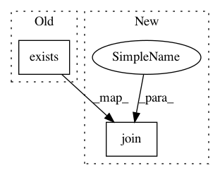

92816c9b9fa67b63a5638fd50e012e28f76bb4d9,gluoncv/model_zoo/model_store.py,,get_model_file,#,186
Before Change
sha1_hash = tag
else:
sha1_hash = _model_sha1[name]
if os.path.exists(file_path):
if check_sha1(file_path, sha1_hash):
return file_path
else:
After Change
short_hash=short_hash(name))
root = os.path.expanduser(root)
params_path = os.path.join(root, file_name + ".params")
lockfile = os.path.join(root, file_name + ".lock")
if use_tag:
sha1_hash = tag
else:
sha1_hash = _model_sha1[name]
In pattern: SUPERPATTERN
Frequency: 3
Non-data size: 2
Instances
Project Name: dmlc/gluon-cv
Commit Name: 92816c9b9fa67b63a5638fd50e012e28f76bb4d9
Time: 2019-11-26
Author: pedro.larroy.lists@gmail.com
File Name: gluoncv/model_zoo/model_store.py
Class Name:
Method Name: get_model_file
Project Name: dmlc/gluon-cv
Commit Name: c89e20e360daeaa4f2a99c2ad0c579d503a07952
Time: 2020-01-18
Author: haofeikuang@gmail.com
File Name: scripts/segmentation/train.py
Class Name:
Method Name: save_checkpoint
Project Name: chainer/chainercv
Commit Name: f4f6ae75b887dc7bc1923a5ffe6e382aa4f1b391
Time: 2017-03-12
Author: yuyuniitani@gmail.com
File Name: chainercv/datasets/pascal_voc/voc_utils.py
Class Name:
Method Name: get_pascal_voc